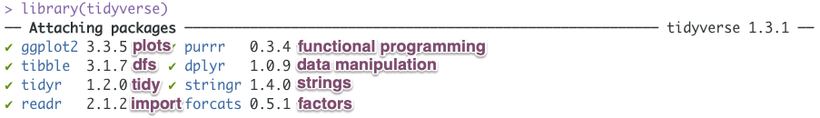
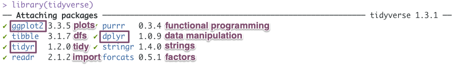
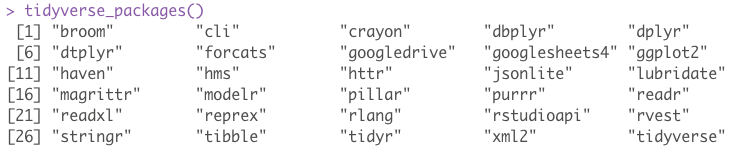
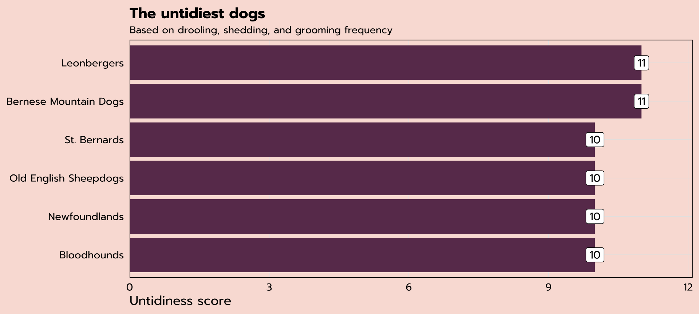
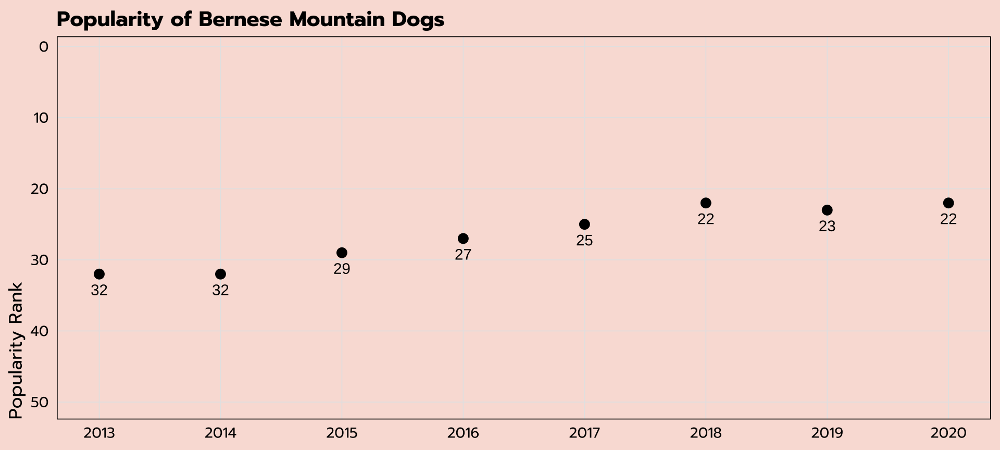
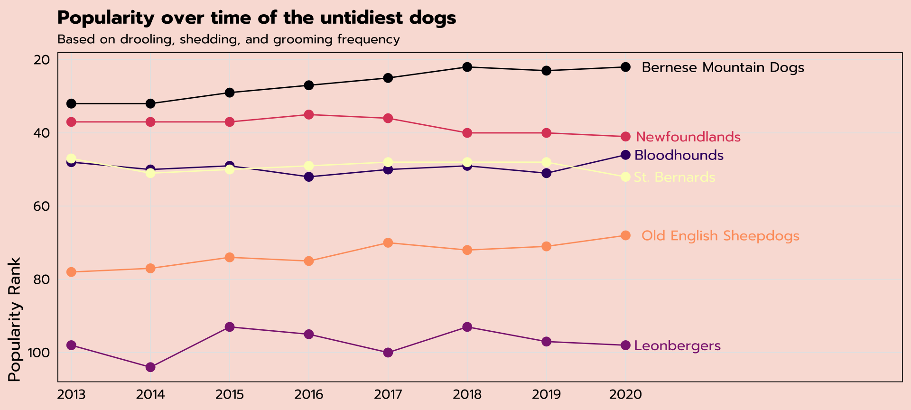
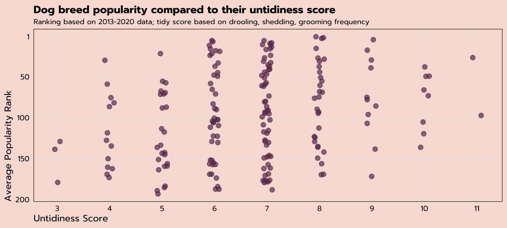
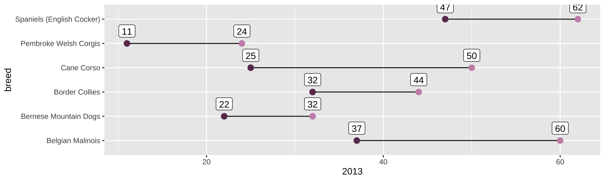
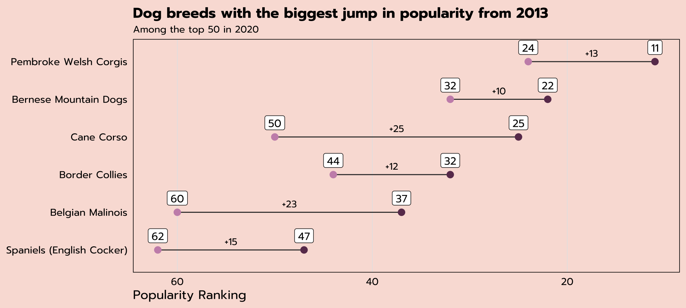

Keeping it Tidy
Using the Tidyverse to Organize, Transform, and Visualize Data
Meghan Hall
R-Ladies Paris
September 8, 2022
Workshop details
- Intro üëã
- Coding along üíª
- Workshop materials ⬇️
- Questions ❓
Why R?
R is an open-source (free!) scripting language for working with data
Wonderfully efficient and ✨reproducible✨
Getting R
You need the R language
And also an IDE (I recommend RStudio)
Both are free, helpful installation guide here
Using R
You use R via packages
…which contain functions
…which are just verbs
mutate(), filter(), summarize()
function(argument)
Why the tidyverse?

An opinionated set of packages that work together and are designed for common data science tasks
Why the tidyverse?
An opinionated set of packages that work together and are designed for common data science tasks
tidy data!
Why the tidyverse?
library(tidyverse) 
Why the tidyverse?
library(tidyverse) 
tidyverse_packages() 
Common dplyr verbs
filter() keeps or discards rows (aka observations)
select() keeps or discards columns (aka variables)
arrange() sorts data set by certain variable(s)
count() tallies data set by certain variable(s)
mutate() creates new variables
summarize() aggregates data
[
these two can be modified by group_by()
Common operators
<- is the assignment operator (think “save as”)
shortcut: option -
|> is the pipe to chain operations together (think recipe instructions)
shortcut: cmd shift m
what about %>%? tidyverse-specific pipe, fine to use!
Today’s data
courtesy of #TidyTuesday
data is from the American Kennel Club
Today’s data
breed_rank
| Breed | 2013 Rank | 2014 Rank | 2015 Rank | 2016 Rank | 2017 Rank | 2018 Rank | 2019 Rank | 2020 Rank |
|---|---|---|---|---|---|---|---|---|
| Retrievers (Labrador) | 1 | 1 | 1 | 1 | 1 | 1 | 1 | 1 |
| French Bulldogs | 11 | 9 | 6 | 6 | 4 | 4 | 4 | 2 |
| German Shepherd Dogs | 2 | 2 | 2 | 2 | 2 | 2 | 2 | 3 |
| Retrievers (Golden) | 3 | 3 | 3 | 3 | 3 | 3 | 3 | 4 |
Today’s data
breed_traits
| Breed | Affectionate With Family | Good With Young Children | Good With Other Dogs | Shedding Level |
|---|---|---|---|---|
| Retrievers (Labrador) | 5 | 5 | 5 | 4 |
| French Bulldogs | 5 | 5 | 4 | 3 |
| German Shepherd Dogs | 5 | 5 | 3 | 4 |
| Retrievers (Golden) | 5 | 5 | 5 | 4 |
Today’s data
per the tidyverse style guide variable names should use snake case
otherwise variables need to be referred to within `back ticks`
| breed | affectionate_with_family | good_with_young_children |
|---|---|---|
| Retrievers (Labrador) | 5 | 5 |
| French Bulldogs | 5 | 5 |
Today’s data
| affectionate_with_family | openness_to_strangers |
| good_with_young_children | playfulness_level |
| good_with_other_dogs | watchdog_protective_nature |
| shedding_level | adaptability_level |
| coat_grooming_frequency | trainability_level |
| drooling_level | energy_level |
| coat_type | barking_level |
| coat_length | mental_stimulation_needs |
Today’s data
| affectionate_with_family | openness_to_strangers |
| good_with_young_children | playfulness_level |
| good_with_other_dogs | watchdog_protective_nature |
| shedding_level | adaptability_level |
| coat_grooming_frequency | trainability_level |
| drooling_level | energy_level |
| coat_type | barking_level |
| coat_length | mental_stimulation_needs |
let’s investigate some tidy (and untidy) dogs!
Data verification
use View(breed_traits) to look üëÄ at your data
| shedding_level | n |
|---|---|
| 0 | 1 |
| 1 | 27 |
| 2 | 41 |
| 3 | 109 |
| 4 | 16 |
| 5 | 1 |
Data verification
use View(breed_traits) to look üëÄ at your data
also useful: count()
| shedding_level | n |
|---|---|
| 0 | 1 |
| 1 | 27 |
| 2 | 41 |
| 3 | 109 |
| 4 | 16 |
| 5 | 1 |
Data verification
| breed | shedding_level | coat_grooming_frequency | drooling_level |
|---|---|---|---|
| Plott Hounds | 0 | 0 | 0 |

A new variable with mutate()
| breed | untidy_score |
|---|---|
| Retrievers (Labrador) | 8 |
| French Bulldogs | 7 |
| German Shepherd Dogs | 8 |
| Retrievers (Golden) | 8 |
| Bulldogs | 9 |
Sorting with arrange()
| breed | untidy_score |
|---|---|
| American Hairless Terriers | 3 |
| Xoloitzcuintli | 3 |
| Cirnechi dell Etna | 3 |
| Chihuahuas | 4 |
| Whippets | 4 |
| Chinese Crested | 4 |
Sorting with arrange()
| breed | untidy_score |
|---|---|
| Bernese Mountain Dogs | 11 |
| Leonbergers | 11 |
| Newfoundlands | 10 |
| Bloodhounds | 10 |
| St. Bernards | 10 |
| Old English Sheepdogs | 10 |
Bar chart
can we plot the scores of the untidiest dogs?
| breed | untidy_score |
|---|---|
| Bernese Mountain Dogs | 11 |
| Leonbergers | 11 |
| Newfoundlands | 10 |
| Bloodhounds | 10 |
| St. Bernards | 10 |
| Old English Sheepdogs | 10 |
Bar chart
expand for full code
untidy_dogs |>
ggplot(aes(x = untidy_score, y = reorder(breed, untidy_score),
label = untidy_score)) +
geom_bar(stat = "identity", fill = "#6A395B") +
geom_label(family = "prompt") +
scale_x_continuous(expand = expansion(mult = c(0, 0.1))) +
labs(title = "The untidiest dogs",
subtitle = "Based on drooling, shedding, and grooming frequency",
x = "Untidiness score", y = NULL) +
theme_tidy_dog()
Tidy data
Bernese Mountain Dogs are the untidiest of all—how does their popularity rank change over time?
| Breed | 2013 Rank | 2014 Rank | 2015 Rank | 2016 Rank | 2017 Rank | 2018 Rank | 2019 Rank | 2020 Rank |
|---|---|---|---|---|---|---|---|---|
| Bernese Mountain Dogs | 32 | 32 | 29 | 27 | 25 | 22 | 23 | 22 |
ggplot(aes(x = ??, y = ??))
Tidy data
There are three interrelated rules which make a dataset tidy:
1. Each variable must have its own column.
2. Each observation must have its own row.
3. Each value must have its own cell.
- R for Data Science
| Breed | 2013 Rank | 2014 Rank | 2015 Rank | 2016 Rank | 2017 Rank | 2018 Rank | 2019 Rank | 2020 Rank |
|---|---|---|---|---|---|---|---|---|
| Bernese Mountain Dogs | 32 | 32 | 29 | 27 | 25 | 22 | 23 | 22 |
Tidy data
There are three interrelated rules which make a dataset tidy:
1. Each variable must have its own column.
2. Each observation must have its own row.
3. Each value must have its own cell.
- R for Data Science
| Breed | 2013 Rank | 2014 Rank | 2015 Rank | 2016 Rank | 2017 Rank | 2018 Rank | 2019 Rank | 2020 Rank |
|---|---|---|---|---|---|---|---|---|
| Bernese Mountain Dogs | 32 | 32 | 29 | 27 | 25 | 22 | 23 | 22 |
how does this violate the tidy data rules?
pivot_longer() for tidy data
| Breed | year | rank |
|---|---|---|
| Bernese Mountain Dogs | 2013 Rank | 32 |
| Bernese Mountain Dogs | 2014 Rank | 32 |
| Bernese Mountain Dogs | 2015 Rank | 29 |
| Bernese Mountain Dogs | 2016 Rank | 27 |
| Bernese Mountain Dogs | 2017 Rank | 25 |
| Bernese Mountain Dogs | 2018 Rank | 22 |
| Bernese Mountain Dogs | 2019 Rank | 23 |
| Bernese Mountain Dogs | 2020 Rank | 22 |
pivot_longer() for tidy data
| breed | year | rank |
|---|---|---|
| Bernese Mountain Dogs | 2013 | 32 |
| Bernese Mountain Dogs | 2014 | 32 |
| Bernese Mountain Dogs | 2015 | 29 |
| Bernese Mountain Dogs | 2016 | 27 |
| Bernese Mountain Dogs | 2017 | 25 |
| Bernese Mountain Dogs | 2018 | 22 |
| Bernese Mountain Dogs | 2019 | 23 |
| Bernese Mountain Dogs | 2020 | 22 |
pivot_longer() for tidy data
Bernese Mountain Dogs are the untidiest of all—how does their popularity rank change over time?
| breed | year | rank |
|---|---|---|
| Bernese Mountain Dogs | 2013 | 32 |
| Bernese Mountain Dogs | 2014 | 32 |
| Bernese Mountain Dogs | 2015 | 29 |
| Bernese Mountain Dogs | 2016 | 27 |
| Bernese Mountain Dogs | 2017 | 25 |
ggplot(aes(x = year, y = rank))
Dot plot
expand for full code
ranks_pivoted |>
filter(str_detect(breed, "Bernese")) |>
ggplot(aes(x = year, y = rank, label = rank)) +
geom_point(size = 3) +
geom_text(vjust = 2) +
scale_y_reverse(limits = c(50, 1)) +
scale_x_continuous(breaks = seq(2013, 2020, 1)) +
labs(x = NULL, y = "Popularity Rank",
title = "Popularity of Bernese Mountain Dogs") +
theme_tidy_dog()
Line graph
can we plot the popularity ranking of the untidiest dogs?
untidy_dogs
| breed | untidy_score |
|---|---|
| Bernese Mountain Dogs | 11 |
| Leonbergers | 11 |
| Newfoundlands | 10 |
| Bloodhounds | 10 |
| St. Bernards | 10 |
| Old English Sheepdogs | 10 |
ranks_pivoted
| breed | year | rank |
|---|---|---|
| Retrievers (Labrador) | 2013 | 1 |
| Retrievers (Labrador) | 2014 | 1 |
| Retrievers (Labrador) | 2015 | 1 |
| Retrievers (Labrador) | 2016 | 1 |
| Retrievers (Labrador) | 2017 | 1 |
| Retrievers (Labrador) | 2018 | 1 |
Line graph
check that this filtered the way we wanted it to!
| breed | n |
|---|---|
| Bernese Mountain Dogs | 8 |
| Bloodhounds | 8 |
| Leonbergers | 8 |
| Newfoundlands | 8 |
| Old English Sheepdogs | 8 |
| St. Bernards | 8 |
Line graph
expand for full code
untidy_popularity |>
mutate(label = ifelse(year == 2020, breed, NA)) |>
ggplot(aes(x = year, y = rank, group = breed, color = breed,
label = label)) +
geom_line() +
geom_point(size = 3) +
geom_text(hjust = -0.1, family = "prompt") +
scale_color_viridis_d(option = "A") +
scale_x_continuous(expand = expansion(mult = c(0.025, 0.5)),
breaks = seq(2013, 2020, 1)) +
scale_y_reverse() +
labs(title = "Popularity over time of the untidiest dogs",
subtitle = "Based on drooling, shedding, and grooming frequency",
x = NULL,
y = "Popularity Rank") +
theme_tidy_dog() +
theme(legend.position = "none")
Relational data: left_join()
can we plot the average popularity ranking against the tidy_scores for all dogs?
| breed | avg_rank |
|---|---|
| Affenpinschers | 147.750 |
| Afghan Hounds | 105.875 |
| Airedale Terriers | 57.375 |
| Akitas | 46.500 |
| Alaskan Malamutes | 58.875 |
| American English Coonhounds | 169.125 |
| American Eskimo Dogs | 118.875 |
| American Foxhounds | 185.250 |
| American Hairless Terriers | NA |
Relational data: left_join()
can we plot the average popularity ranking against the tidy_scores for all dogs?
| breed | avg_rank |
|---|---|
| Affenpinschers | 147.750 |
| Afghan Hounds | 105.875 |
| Airedale Terriers | 57.375 |
| Akitas | 46.500 |
| Alaskan Malamutes | 58.875 |
| American English Coonhounds | 169.125 |
| American Eskimo Dogs | 118.875 |
| American Foxhounds | 185.250 |
| American Hairless Terriers | 129.000 |
Relational data: left_join()
can we plot the average popularity ranking against the tidy_scores for all dogs?
avg_ranks
| breed | avg_rank |
|---|---|
| Affenpinschers | 147.750 |
| Afghan Hounds | 105.875 |
| Airedale Terriers | 57.375 |
| Akitas | 46.500 |
| Alaskan Malamutes | 58.875 |
untidy_scores
| breed | untidy_score |
|---|---|
| Retrievers (Labrador) | 8 |
| French Bulldogs | 7 |
| German Shepherd Dogs | 8 |
| Retrievers (Golden) | 8 |
| Bulldogs | 9 |
Relational data: left_join()
other join types are available, but left_join() is the most common (more info in R4DS)
can specify keys with by = "var"
multiple:
by = c("var1","var2")different names:
by = c("var_left" = "var_right")
| breed | avg_rank | untidy_score |
|---|---|---|
| Affenpinschers | 147.750 | 7 |
| Afghan Hounds | 105.875 | 6 |
Relational data: left_join()
check that this worked the way we wanted it to!
| untidy_score | n |
|---|---|
| 3 | 3 |
| 4 | 13 |
| 5 | 25 |
| 6 | 43 |
| 7 | 59 |
| 8 | 30 |
| 9 | 11 |
| 10 | 8 |
| 11 | 2 |
| NA | 1 |
Relational data: left_join()
| breed | avg_rank | untidy_score |
|---|---|---|
| Plott Hounds | 167 | NA |
| untidy_score | n |
|---|---|
| 3 | 3 |
| 4 | 13 |
| 5 | 25 |
| 6 | 43 |
| 7 | 59 |
| 8 | 30 |
| 9 | 11 |
| 10 | 8 |
| 11 | 2 |
Jitter plot
expand for full code
tidy_and_rank |>
ggplot(aes(x = untidy_score, y = avg_rank)) +
scale_x_continuous(breaks = seq(3, 11, 1)) +
geom_jitter(size = 3, width = 0.1, alpha = 0.7, color = "#6A395B") +
scale_y_reverse(breaks = c(200, 150, 100, 50, 1)) +
labs(title = "Dog breed popularity compared to their untidiness score",
subtitle = "Ranking based on 2013-2020 data; tidy score based on drooling, shedding, grooming frequency",
x = "Untidiness Score",
y = "Average Popularity Rank") +
theme_tidy_dog()
pivot_wider()
which breeds have had the biggest jump in popularity?
ranks_pivoted
| breed | year | rank |
|---|---|---|
| Retrievers (Labrador) | 2013 | 1 |
| Retrievers (Labrador) | 2014 | 1 |
| Retrievers (Labrador) | 2015 | 1 |
| Retrievers (Labrador) | 2016 | 1 |
| Retrievers (Labrador) | 2017 | 1 |
| Retrievers (Labrador) | 2018 | 1 |
| Retrievers (Labrador) | 2019 | 1 |
| Retrievers (Labrador) | 2020 | 1 |
| French Bulldogs | 2013 | 11 |
pivot_wider()
which breeds have had the biggest jump in popularity?
ranks_pivoted
| breed | year | rank |
|---|---|---|
| Retrievers (Labrador) | 2013 | 1 |
| Retrievers (Labrador) | 2014 | 1 |
| Retrievers (Labrador) | 2015 | 1 |
| Retrievers (Labrador) | 2016 | 1 |
| Retrievers (Labrador) | 2017 | 1 |
| Retrievers (Labrador) | 2018 | 1 |
| Retrievers (Labrador) | 2019 | 1 |
| Retrievers (Labrador) | 2020 | 1 |
| French Bulldogs | 2013 | 11 |
pivot_wider()
will all deliver the same results:
filter(year %in% c(2013, 2020))filter(year == 2013 | year == 2020)filter(year == min(year) | year == max(year))
most robust option ☝️
pivot_wider()
| breed | 2013 | 2020 | change |
|---|---|---|---|
| Cane Corso | 50 | 25 | 25 |
| Belgian Malinois | 60 | 37 | 23 |
| Spaniels (English Cocker) | 62 | 47 | 15 |
| Pembroke Welsh Corgis | 24 | 11 | 13 |
| Border Collies | 44 | 32 | 12 |
| Bernese Mountain Dogs | 32 | 22 | 10 |
Dumbbell plot
useful plot type for showing change between two points
to be honest: it’s easier to make these with ggalt::geom_dumbbell()
but we can use ggplot2 to learn a) how to combine multiple geoms and b) how inherited aes works
Dumbbell plot
rank_change |>
ggplot(aes(y = breed)) +
geom_segment(aes(yend = breed, x = `2013`, xend = `2020`)) +
geom_point(aes(x = `2013`), color = "#c991b8", size = 3) +
geom_point(aes(x = `2020`), color = "#6A395B", size = 3) +
geom_label(aes(x = `2020`, label = `2020`), vjust = -0.5) +
geom_label(aes(x = `2013`, label = `2013`), vjust = -0.5)
expand for full code
rank_change |>
mutate(middle = `2020` + (change / 2)) |>
ggplot(aes(y = reorder(breed, -`2020`))) +
geom_segment(aes(yend = reorder(breed, -`2020`), x = `2013`, xend = `2020`),
color = "grey20") +
geom_point(aes(x = `2013`), color = "#c991b8", size = 3) +
geom_point(aes(x = `2020`), color = "#6A395B", size = 3) +
geom_label(aes(x = `2020`, label = `2020`), family = "prompt", vjust = -0.5) +
geom_label(aes(x = `2013`, label = `2013`), family = "prompt", vjust = -0.5) +
geom_text(aes(x = middle, label = str_c("+", change)), family = "prompt",
vjust = -0.75, size = 3.5) +
scale_x_reverse() +
labs(x = "Popularity Ranking",
y = NULL,
title = "Dog breeds with the biggest jump in popularity from 2013",
subtitle = "Among the top 50 in 2020") +
theme_tidy_dog() +
theme(panel.grid.major.y = element_blank())
Go forth and code!

ggplot theme
library(showtext)
# Add Google fonts
font_add_google("Prompt", "prompt")
showtext_auto()
theme_tidy_dog <- function () {
theme_linedraw(base_size=13, base_family="prompt") %+replace%
theme(
axis.title = element_text(hjust = 0),
panel.background = element_rect(fill='#F9E0D9', color = NA),
plot.background = element_rect(fill='#F9E0D9', color=NA),
legend.background = element_rect(fill="transparent", color=NA),
legend.key = element_rect(fill="transparent", color=NA),
axis.ticks = element_blank(),
panel.grid.major = element_line(color = "grey90", size = 0.3),
panel.grid.minor = element_blank(),
plot.title = element_text(size = 15, hjust = 0, vjust = 0.5, face = "bold",
margin = margin(b = 0.2, unit = "cm")),
plot.subtitle = element_text(size = 10, hjust = 0, vjust = 0.5,
margin = margin(b = 0.2, unit = "cm")),
)
}Resources
R for Data Science: the ultimate guide
R for Excel users: a very useful workshop
STAT 545: online book on reproducible data analysis
the RStudio Education site
the Learn tidyverse site
Thank you!
MEGHAN HALL
@MeghanMHall
meghall06
meghan.rbind.io
meghanhall6 AT gmail
slides made with Quarto üéâ